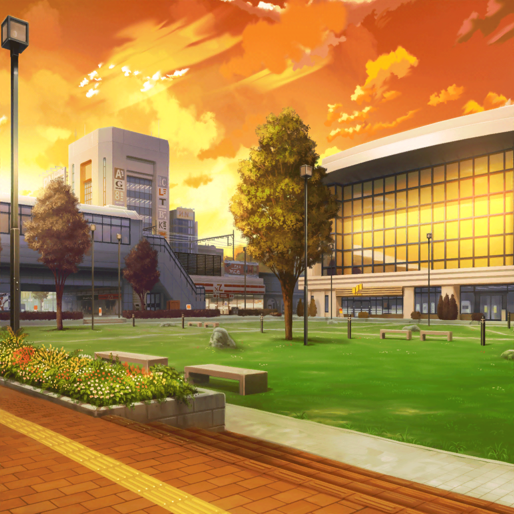

駅前
こころ
あっ！ {{userName}}じゃない！
こころ
こんなところで会うなんて、
今日はなんだか楽しいことが起こりそうね！
こころ
あたし……？ 今は学校の帰りよ
こころ
さっき一緒に歩いていた人はクラスメイトの人たち。
最近、良くクラスの人たちに話しかけられるの
こころ
今まであまり話したことのない人と話すのって楽しいわ！
こころ
クラスメイトもだけど、学校は楽しいことが溢れているわね。
香澄やイヴのような楽しくて笑顔が素敵な人もいるもの！
こころ
他に楽しいこと？ そうね……学校以外だと、やっぱりバンドね！
花音とはぐみ、薫、ミッシェルに美咲。
みんなといると笑顔になるの
こころ
それが良く聞くバンドの魔法、なのかしら？
良く分からないけど、良いことだわ！
こころ
花音達とは演奏するだけじゃなくて、
色んな人に笑顔を届けられるようなことを
考えているの！
こころ
ミッシェルはたまにしか練習には参加しないけど、
きっとあたし達のことをいつも見ていてくれているんだわ
こころ
それにミッシェルの代わりにいつも美咲がいてくれるわ
こころ
そうそう、さっき一緒に帰っていたクラスメイト達、
実はこの前ライブに遊びに来てくれたの！
こころ
色んな人にあたし達の音楽を聴いてもらえて、
とても嬉しかったわ！
こころ
クラスの人もあたし達の演奏を聴いて、
ハロハピが好きになったって言ってくれていたわ！
こころ
それにクラスメイトだけじゃない。
ライブの会場に来てくれた人もみんな笑顔になっていたわ！
こころ
笑顔を忘れちゃった人も笑顔に出来ていたら、
それはとても良いことだと思うわよね！
こころ
広がる笑顔といった感じかしら？ 素晴らしいわ！
こころ
それで、さっき話したライブだけどね、
実は美咲がやろうって言い出したの
こころ
美咲はいつもはハロー、ハッピーワールド！ の
サポートをしてくれているわ
こころ
何かを提案するより意見を整理したり、
まとめてくれたりすることが多いの
こころ
そんな美咲が真剣な顔をしてライブがしたいって言い出したの。
何かあったのかしら？
こころ
あたしはね、その言葉を聴いてすごく良いと思ったわ！
あなたもそう思うでしょ？
こころ
だって、美咲がやりたいって言ったの。
それを止める理由なんて何もないわ
こころ
それにもしやらないって言ったら、
美咲が笑顔じゃなくなっちゃうじゃない。
それは困るわ
こころ
だから、ライブをやることにしたの。
ライブに向けて新しい曲も考えたのよ
こころ
最初は薫の儚いをテーマにした曲にしようと思っていたけど、
美咲は学校の人たちに伝えたいことがあるって言っていたわ
こころ
それを聞いてね、だったらそれを歌にしようってなったの！
こころ
伝えたかったことは、確か……考え方はいっぱいあるってこと！
つまり、笑顔になるような曲よ！
こころ
それでね、ライブでその曲を披露したら、すごかったのよ！
こころ
会場のお客さんが楽しそうに笑っていたわ
こころ
だからね、ライブをしようって言ってくれた美咲には
感謝しないといけないわね
こころ
それだけじゃないわ。
美咲はいつもライブする会場を探してくれるの
こころ
人と交渉したり、そういうあたしには難しいことね。
それをいつも率先してやってくれるのが美咲なの
こころ
それだけじゃないわ。
ハロー、ハッピーワールド！ で決まったことを
いつもミッシェルに伝えてくれているわ
こころ
いつも見えないところで頑張ってくれてるの
こころ
最初はキグルミの人と思っていたけど、
今はそうは思ってないわ！
こころ
美咲は美咲よ。
それにハロー、ハッピーワールド！ には、
美咲が必要だわ
こころ
それはそうと、少し気になっていることがあるのよ。
美咲とミッシェルって声が似ている気がするのよね……
ねえ、そう思わない？
こころ
そうよね！ それに口癖も同じ……ほどほど、だったわよね……？
こころ
他にも美咲に話したことをミッシェルが知ってたり、
ライブ中のことを美咲が知ってたりする……どうしてかしら？
こころ
まるで、二人は通じ合ってるみたいよね……
形はあんなに違うのに！
こころ
あ……っ！ 二人はもしかして……！！
こころ
すごく仲が良いのかしら？
こころ
美咲、花音と仲が良いと思っていたけど、
ミッシェルとも仲が良かったのね
こころ
あたしもバンドメンバーとして仲が良いことは嬉しいわ！
こころ
あら。少し話すつもりだったけれど、
つい楽しかったことを全部話しちゃったわ
こころ
楽しかったことを聞いてもらうと、
笑顔だった時の気持ちを思い出してくるわよね！
こころ
あなたも話を聞いていて楽しい？ それは素晴らしいわ！
こころ
そうだ！ それじゃあ一緒に
もっと楽しいことを探しに行きましょう！
もちろん、今からよ！
こころ
ほら、行くわよ！ レッツゴー！